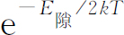
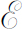

近年来一个引人注目的发展是把固体科学应用于像晶体管之类的电器件的技术发展。对半导体的研究导致它们的有用性质以及大量的实际应用的发现。这个领域的变化如此之快以至于我们今天告诉你们的东西到了明年就可能不再正确了。它肯定是不完善的。非常清楚，由于对这些材料的不断研究，随着时间的推移将会出现许多新的和更惊人的事物。为了学习这一卷中以后各章的内容，你们不一定非要弄懂这一章不可。但是，看到所学的内容中至少有一部分与现实世界有关时你们会感到兴趣的。
已知的半导体种类很多，但我们将着重于现在有最大技术应用价值的半导体。这些也是了解得最清楚的，了解了它们，对其他许多半导体也将会得到一定的了解。今天最常用的半导体物质是硅和锗。这些元素结晶形成金刚石晶格，这是一种立方结构，其中一个原子和最靠近的4个原子形成四面体键。虽然在室温下它们多少有点导电，但在很低的温度时——近于绝对零度——它们是绝缘体，它们不是金属；它们被称作半导体 。
假如我们以某种方法在处于低温的硅或锗晶体中放入一个额外的电子，我们就遇到上一章中所描写的那种情况。这个电子会在晶体中游荡，从一个原子跳到下一个原子。实际上我们只讨论过长方格中的电子，而对于真实的硅或锗的晶格，方程式多少有点不同。不过，所有的基本特征都可用长方格的结果来说明。
正如我们在第13章中曾经看到的，这些电子只能具有某一定能带——叫做导带 ——中的能量。在这个带中，能量和概率幅C 的波数k 的关系（见式13.24）是
式中的A 是在x ，y 和z 方向上跳跃的振幅，a ，b 和c 是这些方向上的晶格间隔。
当能量近于能带底时，可以取式（14.1）的近似（参见§13-4）：
如果我们考虑电子在某个特殊方向上运动，使得k 的3个分量总有相同的比例。能量是波数的二次函数——和电子的动量的关系一样。我们可以写成：
其中α 是某一常数。我们可以画出E 对k 的函数图。如图14-1所示。我们把这种图称为“能量图”。一个处于特定能量和动量状态的电子可以用图上的一点（如S 点）来表示。
图14-1 电子在绝缘晶体中的能量图
正像我们在第13章中也曾讲过的，如果我们从中性绝缘体上取走 一个电子，我们就有类似的情况。于是，一个电子可以从附近的原子上跳过来填充这个“空穴”，而在原来的原子处留下了另一个“空穴”。我们可以通过写出在任一特定原子处找到空穴 的振幅，以及说明空穴 可以从一个原子跳到下一个原子来描写它的行为。（显然，空穴从原子a 跳到原子b 的振幅A 正好和原子b 上的一个电子跳进原子a 的空穴的振幅相同。）对于空穴 和对于额外的电子，它们的数学式子完全相同。我们再次得出空穴的能量和它的波数的关系由和式（14.1）或式（14.2）相同的方程式表示出来。当然振幅A x ，A y 和A z 的数值是不同的。空穴的能量和它的概率幅的波数有关。它的能量处在有限能带中。在能带底附近，它的能量随波数——或动量——的平方变化，如图14-1所示。按照§13-3的论证，我们将发现空穴的行为也像具有一定的有效质量的经典粒子一样 ，——只是在非立方晶体中质量依赖于运动的方向。所以空穴就像一个在晶体中运动的带正电的粒子 。空穴粒子的电荷是正的。因为它在于失去电子的位置；当它在一个方向上运动时，实际上是电子在相反的方向上运动。
假如我们在中性晶体中放进几个电子，它们将像低气压气体中的原子那样四处活动。假如电子不很多，它们之间的相互作用不十分重要。如果我们在晶体上加上电场，电子就开始运动，于是有电流流过。最终电子都被拉向晶体的一边，如果那里有一个金属电极，电子都要被电极收集，而晶体又变成中性。
同样我们可以把很多空穴放进晶体。在没有外加电场时，它们将随机地到处活动。在电场作用下它们要向负端流动并被“收集”——实际上发生的是它们被自金属电极来的电子中和。
晶体中也可以同时存在空穴和电子。如果它们的数目不多，它们将各自独立地运动。加上电场，它们都对电流作出贡献。由于明显的理由，电子被称为负载流子 ，空穴被称作正载流子 。
到现在为止，我们考虑的电子是从外面放进晶体的，或把电子取走造成空穴。我们也可以这样来“创造”一个电子空穴对：从一个中性原子上取走一个被束缚的电子并把它放到同一晶体中一定距离外的地方。于是我们就有一个自由电子和一个自由空穴，二者都能像我们已经描写过的那样运动。
把一个电子放进 状态S ——我们说“产生”状态S ——所需的能量就是图14-2中所标出的能量E － 。它是高于 的某个能量。“产生”处于某一状态S ′的一个空穴所需的能量是图14-3中的能量E ＋ ，它是比 大的某个能量，如果现在我们要产生在状态S 和S ′的电子空穴对，所需的能量就等于E － ＋E ＋ 。
电子空穴对的产生是一个共生的过程（我们以后将会看到），所以很多人喜欢把图14-2和图14-3放在同一张图上——把空穴 能量向下 画，虽然它实际上是正 能量。我们用这种方式把两个图合起来画在图14-4中。这种图的好处是产生处于S 中的电子和处于S ′中的空穴这一电子空穴对所需的能量E 偶 ＝E － ＋E ＋ 正好等于S 和S ′间的垂直距离，如图14-4所示。产生一个电子空穴对所需的最小能量称为“隙”能，它等于 。
图14-2 “产生”一个自由电子需要能量E －
图14-3 “产生”一个在S′态的空穴需要能量E ＋

图14-4 电子和空穴画在一起的能量图
图14-5 电子和空穴的能级图
有时你会看到一种比较简单的图，称作能级图。当人们对变量k 不感兴趣时就画这种图。这样的图——如图14-5所示——只表示电子和空穴的可能的能量 (2) 。
怎样创造出电子空穴对呢？有几种方法。例如，吸收光或X 射线的光子，如果光子能量高于隙的能量就会产生电子空穴对。电子空穴对的产生率正比于光的强度。如果在晶片两边镀上两片电极并加上“偏置”电压，电子和空穴就会被拉向电极。电路中的电流将正比于光的强度。这就是产生光电导现象和光电导管作用的机理。
电子空穴对也可用高能粒子来产生。当快速运动的带电粒子——例如能量为几十或几百MeV的质子或π 介子——穿过晶体时，它的电场会把电子从它的束缚态撞击出来产生电子空穴对。在径迹的每1毫米路程上会发生几十万次这样的事件。粒子通过以后，载流子能够被收集起来，这样就得到一个电脉冲。这就是近来在核物理实验中使用的半导体计数器的作用机理。这类计数器并不一定需要半导体，也可以用晶态绝缘体制造。事实上，第一个这种计数器是用金刚石晶体制造的，它在室温下是绝缘体。如果要使电子和空穴能够自由地运动到电极上而不被陷俘，就需要非常纯的晶体。采用半导体硅和锗是因为能将它们制造成高纯度的适当大小（厘米的线度）的晶体。
迄今为止我们只涉及温度接近绝对零度的半导体晶体。在任何有限的温度下，还有另一种产生电子空穴对的机理。产生电子空穴对的能量可由晶体的热能提供，晶体热振动可以把它们的能量转移给电子空穴对——引起“自发”产生。
单位时间内，像隙能E 隙 那样大的能量聚集到一个原子的位置上的概率正比于 ，其中T 是温度，k 是玻尔兹曼常数（参见第1卷第40章）。在绝对零度附近没有可以觉察的概率，但随着温度的增加，产生电子空穴对的概率就增加。在任何有限的温度下，对的产生以恒定的速率不断继续下去，负的和正的载流子越来越多。当然，这是不会发生的，因为过了一会儿，电子和空穴会偶然地相遇——电子落进空穴并把多余的能量交给晶格。我们说电子和空穴“湮没”了。在单位时间内空穴和电子有一定的概率相遇，于是它们互相湮没。
假定单位体积的电子数为N n （n 表示负载流子），正载流子的密度是N p 。单位时间内一个电子和一个空穴相遇并湮没的机会正比于乘积N n N p 。在平衡时，这个速率必定等于电子空穴对的产生速率。你们知道，在平衡时N n 和N p 的乘积应等于某一常数乘上玻尔兹曼因子：
当我们说常数时，我们指的是近似于常数。更完整的理论——包含有关空穴和电子彼此如何“相遇”更多的细节——表明“常数”稍稍依赖于温度，但对温度的主要依赖是在指数上。
作为一个例子，我们考虑原来是中性的纯净材料。在有限的温度下，你会料到正的和负的载流子的数目相同，N n ＝N p 。它们各自都按 随温度变化。半导体的性质——例如电导率——的许多变化主要决定于指数因子，因为所有其他因子随温度的变化要慢得多。锗的隙能大约是0.72eV，硅是1.1eV。
在室温下kT 大约是1eV的1/40。在这样的温度下有足够的空穴和电子给出可观的电导率，而在譬如说30K——室温的十分之一——电导率是难以觉察的。金刚石的隙能是6～7eV，在室温下金刚石是好的绝缘体。
到现在为止我们已经谈论过将额外电子放入理想完整的晶体的晶格中的两种方法。一种方法是从外源注入电子，另一种方法从一个中性原子上敲出一个束缚电子同时产生一个电子和一个空穴。还可以用别的方法把电子放到晶体的导带里面。假定我们想象锗晶体中一个锗原子被一个砷原子所代替。锗原子是4价，晶体的结构由4个价电子控制。另一方面，砷是5价。我们发现一个砷原子能占据锗晶格中的一个位置（因为它的大小大致合适），但这样一来它必须表现得和4价原子一样——用它的4个价电子形成晶体键，于是还有一个电子剩了下来。这个多余的电子只是很松地束缚着——结合能大约只有一个电子伏特的1/100。在室温下电子很容易从晶体的热能中获得这样多的能量，并且独自离开——像自由电子那样在晶格中运动。像砷那样的杂质原子被称作施主位 ，因为它能放出一个负载流子到晶体中。假如锗晶体是从加进非常少量的砷的熔融金属中生长出来的，砷施主位将分布在整个晶体中，于是在晶体中将建立起一定的负载流子密度。
你们也许认为只要对晶体加上任意小的电场，就会将这些载流子扫出去。然而，事实并非如此，因为晶体内的每个砷原子都带有正电荷。如果晶体要保持中性，负载流子电子的平均密度必须等于施主位的密度。如果你在晶体的两边加上电极，并把它们联结到电池上，就会有电流流动。但当载流电子从一端被扫出，新的传导电子必定从另一端的电极进入，结果传导电子的平均密度保持和施主位的密度差不多相等。
因为施主位带正电荷，当导电电子在晶体中扩散时有被它们俘获的趋势。所以，施主位相当于我们在上一节中讨论过的陷阱。但如果陷俘能量足够小——砷就是这样——在任一时刻被陷俘的载流子数目只是总数的一小部分。要完全理解半导体的行为，人们必须把这种陷俘作用考虑进去。然而，在我们讨论的其余部分中，我们将假定陷俘能量足够低，并且温度足够高，从而所有的施主位都已失去了它们的电子。当然这只是一种近似。
也可以在锗的晶体中掺入一些3价的杂质原子，例如铝。铝原子试图窃取一个额外的电子并表现得像4价原子那样。它从某个邻近的锗原子窃得一个电子，结果成为一个有效价数为4的带负电的原子。当然，当它从锗原子窃得一个电子后，就在那里留下一个空穴，这个空穴能作为正载流子在晶体中游荡。能用这种方法产生空穴的杂质原子称为受主 ，因为它“接受”一个电子。假如锗或硅晶体是从加进少量杂质铝的熔融材料中生长的，晶体内部就具有一定的内建空穴密度，空穴就相当于正载流子。
当施主或受主杂质加进半导体中后，我们说材料被“掺杂”了。
当具有内建施主杂质的锗晶体处于室温时，由激发感应产生的电子空穴对以及施主位都贡献出一些传导电子。自然，从这两个来源产生的电子是相等的，在达到平衡的统计过程中起作用是总数N n 。如果温度不太低，施主杂质原子提供的负载流子的数目大致等于晶体中的杂质原子的数目。平衡时式（14.4）必定仍旧有效；给定温度条件下，乘积N n N p 是一定的。这意味着，假如我们加入一些使N n 增加的施主杂质，正载流子的数目N p 必定减少一定数量以使N n N p 不变。如果杂质浓度足够高，负载流子数目N n 由施主位的数目决定并且几乎不依赖于温度——所有指数因子上的变化由N p 提供，虽然它比N n 少得多。在另一些有少量施主杂质的纯净的晶体中，大多数载流子是负载流子，这种材料叫做“n 型”半导体。
假如在晶格中加入受主型杂质，一些新的空穴将到处漂移，并与一些由热起伏产生的自由电子发生湮没。这一过程将一直继续到式（14.4）被满足。在平衡条件下，正载流子数目将增加而负载流子数目将减少以保持它们的乘积为常数。正载流子较多的材料称为“p 型”半导体。
假如我们把两个电极放在一块半导体晶体上并把它们联结到电势差的电源上去。晶体中将建立起电场。电场会使正的和负的载流子运动，于是有电流流动。我们首先来考虑在n 型材料中会发生什么过程，这种材料中绝大多数是负载流子。对于这类材料，我们可以不理会其中的空穴，因为它们是如此之少，对电流几乎没有贡献。在理想的晶体中载流子将不受阻碍地运动。然而，在实际晶体中，在有限的温度下——特别是在有一些杂质的晶体中——电子的运动并不是完全自由的，它们不断地发生碰撞，被撞离原来的轨道，即改变它们的动量。这些碰撞就是我们在上一章中谈到的散射，在晶格中任何具有不规则性的地方都会发生这种散射。在n 型材料中，散射主要就是由产生载流子的施主位引起的。因为传导电子在施主位上有略微不同的能量，概率波就从这些点上散射。然而，即使在完全纯净的晶体中，（在有限的温度下）热振动也要在晶格中引起不规则性。按照经典的观点，我们可以说原子并不是准确地排列在规则的晶格上，在任何瞬间由于热振动都要稍稍离开原位。在第13章所介绍的理论中，和每一格点相联系的能量E 0 随位置变化而略有变化，所以概率振幅波并不是完全透射而是以不规则的方式被散射。在非常高的温度下，对非常纯净的材料，这种散射可能变得很重要。但在实际的器件所用的大多数掺杂材料中，在杂质原子上的散射起主要作用。我们现在要对这种材料的电导率作一个估算。
当外电场加到n 型半导体上，每一个负载流子在电场中被加速，它的速度不断增加直到在一个施主位上被散射。这意味着平时具有热能，以随机方式运动着的载流子将沿着电场力线的方向获得一个平均漂移速度，形成电流流过晶体的。与典型的热运动速度相比，漂移速度一般是很小的，所以我们可以通过假定载流子在两次散射之间的平均时间是常数来估算电流。我们设负载流子具有有效电荷q n 。在电场 中，作用于载流子的力是q n 。在第1卷§43-3中，我们曾计算了在这种情形下的平均漂移速度，并得到漂移速度由F τ /m 给出，其中F 是作用于电荷上的力，τ 是两次碰撞间的平均自由时间，m 是质量。我们应当用上一章算出的有效质量，但因为只要作粗略的估算，我们假定有效质量在各个方向上都是相等的。这里我们把它称作m n 。在这个近似下，平均漂移速度是：
知道了漂移速度我们就能求出电流。电流密度j 等于单位体积内载流子的数目N n 乘以平均漂移速度，再乘以每个载流子的电荷。因此这里电流密度是
我们看到电流密度正比于电场，这样的半导体材料遵从欧姆定律。j 和 的比例系数，即电导率σ 是
对于n 型半导体，电导率相对地不依赖于温度。首先，多数载流子的数目N n 主要决定于晶体中施主的密度（只要温度不是那么低使得太多的载流子被陷俘）。其次，碰撞之间的平均时间τ n 主要由杂质原子的密度控制，当然它不依赖于温度。
我们可以把完全相同的论证应用于p 型材料，只要改变一下式（14.7）中的参量的数值。假如同时存在的负的和正的两种载流子的数目可以相比较，我们必须把两种载流子的贡献加起来。总电导率由下式给出
对于非常纯净的材料，N
p
和N
n
近于相等，它们比掺杂材料中的要小，所以电导率要小一些。可是它们随温度变化得很快（正像我们已经看到过的按照 变化），所以电导率随温度而极快地变化。
变化），所以电导率随温度而极快地变化。
只有电子是相对自由的客体的材料中，也会有行为像正粒子的空穴所运载的电流，这确实是一件难以理解的事。因此，我们要描写一个实验，这实验能十分明确地证明电流的载流子绝对肯定是正的。假设我们有一块半导体材料——也可以是金属——我们在上面加上电场，从而在某个方向引起电流，例如水平方向，如图14-6所示。现在假设我们在这块材料上再加上磁场，其指向和电流方向成直角，譬如说指向 图的里面 。运动着的载流子会感受到磁力q （v ×B ）的作用。由于平均漂移速度不是向右就是向左——取决于载流子上电荷的符号——作用于载流子上的平均磁力不是向上就是向下。不，这是不对的！对于我们所假定的电流和磁场方向，作用于运动电荷上的磁力总是向上 的。正电荷在j 的方向上运动（向右）会受到向上的力。如果电流由负电荷运载，它们向左运动（对于同样符号的传导电流），于是它们也会受到向上的力。然而，在稳定情况下，载流子并没有向上的运动，因为电流只能从左边流到右边。所发生的过程是，开始时有一些电荷向上流动，在半导体的上表面形成面电荷密度——在晶体的下表面上留下相等但相反的面电荷密度。电荷聚集在上表面和下表面上，直到它们作用于运动着的电荷上的电力正好和（平均的）磁力完全相抵消，因此稳恒电流照旧水平地流动。上表面和下表面上的电荷将产生一个垂直跨过晶体的电势差，可以用高电阻伏特计来测量这电势差，如图14-7所示。伏特计记录的电势差的符号取决于形成电流的载流子的电荷的符号。
图14-6 霍尔效应来自作用于载流子的磁力
图14-7 测量霍尔效应
在第一次做此实验时，正像对负的传导电子所预期的那样，人们预期电势差的符号将是负的。因此，当人们发现对于某些材料电势差的符号与预期的相反就感到十分奇怪。这表明载流子是带正电荷的粒子。从我们关于掺杂半导体的讨论中可以理解，n 型半导体应当产生与负的载流子相应的电势差符号，而p 型半导体应当给出相反的电势差，因为电流是由带正电的空穴负载的。
霍尔效应中电势差的反常符号最初是在金属中而不是在半导体中发现的。曾经假定金属都是电子导电的，然而，对于铍却发现其电势差的符号恰好相反。现在了解了，在金属中和在半导体中一样，这也是可能的，在一定的条件下，起传导作用的“客体”是空穴。虽然，归根结蒂运动的是晶体中的电子，然而动量和能量的关系以及对外场的反应却正是我们对电流由正粒子载运时所预期的那样。
我们来看一看是否能对霍尔效应预言的电势差的大小作一个定量的估计。假如图14-7的伏特计中的电流可以忽略，那么半导体内的电荷一定从左向右运动，并且垂直的磁力一定精确地被垂直的电场力抵消，我们把这垂直的电场记作 tr （“tr”表“横向”）。假如此电场抵消磁力，必须：
应用式（14.6）给出的漂移速度和电流密度的关系，我们得到
晶体上面和下面的电势差当然等于电场强度乘以晶体的高度。晶体中的电场强度 tr 正比于电流密度和磁场强度。比例常数1/qN称为霍尔系数，通常用符号R H 表示。霍尔系数只取决于载流子的密度——倘若某一符号的载流子是绝大多数，因此，霍尔效应的测量是一种确定半导体中载流子密度的方便的实验方法。
我们现在来讨论如果取两块具有不同内部特性——例如掺有不同种类或不同数量的杂质——的锗或硅，并把它们放在一起做成一个“结”，这时将发生什么情形。让我们从所谓的p-n 结开始，在结上边界的一边是p 型锗，边界的另一边是n 型锗——如图14-8所示。实际上，把分开的两块晶体放在一起并使它们在原子的尺度上均匀接触是不实际的。实际上，结是在一块单晶上做出来的，将单晶做成两个分隔的区域。一个方法是当晶体生长到一半的时候在“熔体”中掺入一些适当的杂质。另一种方法是在表面上涂一点杂质元素，然后加热晶体使一些杂质原子扩散到晶体的内部。用这些方法制成的结没有明显的边界，但是边界可以做到10－4 cm左右那样薄。对于下面的讨论，我们将考虑理想的情况，即晶体这两个具有不同
性质的区域有明显的边界隔开。
图14-8 p-n 结
在p-n 结的n 型一边有可以运动的自由电子，还有使总电荷平衡的固定的施主位。在p 型的一边有自由空穴运动着，并有等量的受主位使电荷平衡。实际上这描写的是我们使两种材料相互接触之前的状况。一旦它们联结在一起，靠近交界处的情况就改变了。当n 型材料中的电子到达边界时，它们并不像在自由表面上那样被反射回去，而可以一直进入p 型材料。因此，n 型材料中的一些电子会扩散到电子比较少的p 型材料中。这过程不会一直进行下去，因为当n 型的一边失去电子后净的正电荷就要增加，直到最后建立起一个电压以阻止电子扩散到p 型一边去。同样，p 型材料中的正载流子通过结扩散进入n 型材料中。当它们这样做时，在后面留下了过量的负电荷。在平衡条件下，净扩散电流必定等于零。这是由电场造成的，因为所建立的电场要把正载流子拉回p 型材料。
我们这里描写的两种扩散过程是同时进行的。你们要注意，这两个过程都使n 型材料带正电，使p 型材料带负电。由于半导体材料的有限的电导率，从p 的一边到n 的一边电势的变化只在靠近边界比较窄的区域内发生，在每块材料的主体部分中，电势仍然是均匀的。我们设x 轴的方向垂直于边界表面。那么电势将随x 而变化，如图14-9（b）所示。我们还在图（c）中画出了预计的n 载流子密度N n 和p 载流子密度N p 的变化。在离结远的地方，载流子密度N p 和N n 应当正好等于同样温度下两块材料各自的平衡密度。（图中所画的结的两边p 型材料比n 型材料掺杂更重。）由于结处的电势梯度，正载流子必须爬过一电势坡才能到达n 型的一边。这意味着在平衡条件下在n 型材料中比在p 型材料中有较少的正载流子。回忆一下统计力学的定律，我们预期两边的p 型载流子数目的比由下面的方程给出：
图14-9 在未加偏压的半导体结上的电势和载流子密度
指数的分子中乘积q p V 就是使电荷q p 通过电势差V 所需的能量。
对n 型载流子密度我们有完全相同的方程式：
假如我们已知在两种材料内各自的平衡密度，我们可以用上面两个方程式的任何一个来测定给两边的电势差。
注意，假如方程式（14.10）和（14.11）给出同样的电势差V 数值，乘积N p N n 无论在p 的一边还是在n 一边必定相同。（记住q n ＝－q p 。）然而，我们前面已经看到，这一乘积只依赖于温度和晶体的隙能。假定晶体的两边都处于同样的温度，这两个方程式中的电势差具有同一数值。
因为从结的一边到另一边有一个电势差，它看上去有些像一个电池。假如我们从n 型的一边到p 型一边联结一根导线或许会获得电流。真是这样的话，确实十分美妙，因为如果真是这样的话电流就会一直流下去而不会消耗掉任何材料，于是我们就有一个违背热力学第二定律的无穷无尽的能源！然而，如果你从p 的一边接一根导线到n 的一边，实际上不会有电流。其理由很容易看出来的。假定我们先设想一根由未掺杂的材料制成的导线。当我们把这根导线联结到n 型的一端时，我们就有了一个结。在结的两边就会产生电势差。我们假定这正好等于从p 型材料到n 型材料的电势差的一半。当我们把未掺杂的导线联结到结的p 型一边，在这个结上也有电势差——也等于p-n 结上电势降落的一半。在所有结上，电势差会自动调整到使得电路中没有净电流。不论你用哪一种导线联结n-p 结的两边，你都造出两个新的结，只要所有的结都在同样的温度下，在结上的电势跃变都互相补偿，从而电路中没有电流。不过——假如你仔细研究一下——如果有一些结和另一些结的温度不同，结果就会有电流流动。其中有一些结会被这电流加热而另一些将被冷却，于是热能就转化为电能。测量温度的热电偶以及温差发电机就是利用这一效应工作的。同一效应也用于制造小型制冷机。
如果我们不能测量n-p 结两边的电势差，我们怎样才能肯定图14-9所示的电势梯度确实存在呢？一个方法是用光来照射结。光子被吸收后会产生电子空穴对。在结处存在的强电场（等于图14-9的电势曲线的斜率）中，空穴会被驱赶到p 型区域，而电子会被驱赶到n 型区域。现在如果把结的两边联结到外电路中，这些额外的电荷会产生电流。在结上，光能会转换为电能。使某些人造卫星运转的产生电功率的太阳能电池就是按照这个原理工作的。
在关于半导体结的作用的讨论中，我们一直假定空穴和电子的行为或多或少是相互独立的——除了它们以某种方式达到适当的统计平衡。当我们描写光照在结上产生电流时，我们假定在结区产生的电子或空穴在被相反极性的载流子湮没之前就进入了晶体的主体部分。在紧靠结的区域内，两种符号的载流子的密度近似地相等，电子空穴湮没效应（也常称之为“复合”）是重要的效应，在对半导体结的详尽分析中必须认真考虑这个效应。我们还假定在结区内产生的电子或空穴在复合之前有很多的机会进入晶体体内。对于典型的半导体材料，电子或空穴找到其异号的伴侣并湮没的典型时间在10－3 ～10－7 s范围之内。顺便说说，这个时间远远长于我们分析电导率时所采用的与晶体中的散射中心的两次碰撞之间的平均自由时间。在典型的n-p 结中，在结区中形成的电子或空穴被扫至晶体内部所需的时间一般大大短于复合时间。因此，大多数电子空穴对都将对外电流作出贡献。
下面我们要说明p-n 结为何可以用作整流器。如果我们在结两边加上电压，当极性为某一方向时会有很大的电流流过，但在相反的方向上加上同样的电压时，却只有很小的电流。假如在结上加的是交流电压，净电流只沿一个方向流动——电流被“整流”。让我们再来看一看图14-9所描绘的平衡条件下发生些什么。在p 型材料中有很大的正载流子浓度N p ，这些载流子向各处扩散并且每秒内有一定数量到达结处。到达结的正载流子电流正比于N p 。然而，其中的大多数被结处高的电势坡挡了回去，只有约为 的一部分能通过。从另一边也有正载流子电流来到结处。这个电流也正比于n 型区域的正载流子密度，但这里的载流子密度大大低于p 型一边的密度。当正的载流子从n 型一边来到结处时，它们遇到的是具有负的坡度的电势坡并立即滑下斜坡到结的p 型一边。我们把这电流称为I 0 。在平衡时从两个方向来的电流相等。我们认为下面的关系式成立：
你们会注意到这个方程实际上和式（14.10）完全一样。我们只是用了不同的方法导出它。
不过，假定我们使结的n 边的电压降低一个数量ΔV ——我们可以通过在结上加上外电势差来做到这一点。现在电势坡两面的电势差不再是V 而是V －ΔV 。从p 边到n 边的正载流子电流的表式中这个电势差在指数因子中出现。令这个电流为I 1 ，我们有
这个电流比I 0 正好大了一个因子 。所以I 1 和I 0 之间有如下的关系：
来自p 边的电流随着外加电压ΔV 指数式地增加。然而，只要ΔV 不太大从n 边来的正载流子的电流保持不变。当它们来到势垒，这些载流子还是会发现向下的电势坡并且全部降落到p 边。（如果ΔV 大于自然电势差V ，情形就不同了，但是我们不去考虑在这样高的电压下会发生些什么。）穿过结的正载流子的净电流I 就是两边来的电流之差：
空穴的净电流I 流进n 型区域。从那里空穴扩散到n 型区域的体内，最终被多数n 型载流子——电子——湮没。在这湮没过程中损失的电子将由从n 型材料外端来的电子电流补偿。
当ΔV 为零，式（14.14）中的净电流为零。对于正的ΔV ，电流随外加电压很快增加。对于负的ΔV ，电流改变符号，但是指数项很快变为可忽略，并且负的电流永远不会超过I 0 ——按照我们的假设这I 0 是相当小的。这个反向电流I 0 被结的n 边少数p 型载流子很小的密度所限制。
如果你对流过结的负载流子的电流作完全相同的分析，首先对没有电势差的情形，然后对小的外加电势差ΔV ，你会再次得到完全和式（14.14）一样的净电子电流的方程式。因为总电流是两种载流子贡献的电流之和，倘若我们认为I 0 是加上反向电压时可能流过的最大电流，那么式（14.14）完全可用总全电流。
式（14.14）的电压电流特性曲线如图14-10所示。它表示固体二极管（诸如现代的计算机中用的那种二极管）的典型性质。我们应当看到式（14.14）只对小的电压是正确的。当电压和自然的内部电势差V 不相上下或者比它更大时，其他的效应就要起作用了，电流不再遵从这一简单的式子。
顺便说说，你们还记得在第1卷第46章讨论“力学整流器”——棘轮和掣爪——的时候，我们曾得到和这里得出的式（14.14）完全相同的式子。我们之所以在这两种情况中得到同样的式子是因为两者的基本物理过程十分相似。
图14-10 通过结的电流作为结两端电压的函数
或许半导体最重要的应用是晶体管。晶体管由两个互相靠得非常近的半导体结组成。它的工作原理有一部分与我们刚才描写的关于半导体二极管即整流结的原理相同。假设我们制造一小块锗，上面有3个不同的区域，一个p 型区域，一个n 型区域，以及另一个p 型区域，如图14-11（a）所示。这一组合称作p-n-p 晶体管。晶体管中的这两个结的行为都和我们在上一节中所描写的一样。特别是每一个结上都有一个电势梯度，从n 型区域到每一个p 型区域都有一定的电势降落。假如两个p 型区域有同样的内部性质，我们沿着晶体观察，测量到的电势变化就如图14-11（b）所示。
图14-11 没有加外电压时晶体管中的电势分布
现在让我们设想，把3个区域的每一个都加上外电压，如图14-12（a）所示。我们以接在左方p 区的端点作为所有电压的参考点，所以按照定义这点为零电势。我们把这一端称为发射极 。n 型区域称为基极 ，它联接到小的负电势上。右方的p 型区域称为集电极 ，并联接到较大的负电势上。在这样的情形下晶体上的电势变化就如图14-12（b）所示。
我们先来看一看正载流子的情形，因为主要是它的行为控制着p-n-p 晶体管的工作。既然发射极相对于基极是处在正电势，正载流子的电流就会从发射极区流入基极区。由于结在“正向电压”作用下——相应于图14-10中图的右半部分——流过的电流比较大。在这样的条件下，正载流子或空穴从p 型区域被“发射”到n 型区域。你可能想象这个电流会通过基极的端点b 流出n 型区域。然而，现在接触到了晶体管的奥秘了。n型区域做得非常薄——典型的厚度是10－3 cm或更小，大大小于它们的横向线度。这意味着当空穴进入n 型区域后，在和n 型区域中的电子湮没之前有很大的机会扩散到另一个结。当它们到达n 型区域的右方边界时，它们遇到急剧下降的电势坡并立即落入右方的p 型区域。晶体的这一边称为集电极，因为它“收集”扩散穿过n 型区域的空穴。在一个典型的晶体管中，除了很小的百分比以外，离开发射极并进入基极的空穴电流大多在集电极区域被收集起来，其余只有很少一部分贡献净的基极电流。基极和集电极电流之和显然等于发射极电流。
图14-12 晶体管工作时的电势分布
现在想象一下，假如我们稍稍改变一下基极端的电势V b 会发生些什么。因为我们是在图14-10的曲线的相对陡峭的部分，电势V b 很小的变化会引起发射极电流I e 很大的变化。因为集电极电压V c 大大负于基极电压，电势的微小变化不会显著地影响基极和集电极之间陡峭的电势坡。发射到n 区域的大多数正载流子仍旧被集电极俘获。于是当我们改变基极电势时，集电极的电流I c 就会有相应的变化。不过，根本的一点是基极电流I b 始终只是集电极电流的一小部分。晶体管是一个放大器，基极上引入小电流I b 在集电极上给出大电流——大100倍左右。
迄今为止我们一直忽略了的负载流子——电子——又怎样呢？首先，我们并不认为任何值得注意的电子电流在基极和集电极之间流动。集电极上加有大的负电压时，基极中的电子不得不爬上很高的势能高坡，而这样做的概率是很小的。只有很小的电子电流流向集电极。
在另一方面，基极中的电子确实能够 进入发射极区域。事实上，你可能会料到在这个方向的电子电流比得上从发射极到基极的空穴电流。但是这种电子电流不仅没有用，而且还有害，因为对于一定的集电极空穴电流，它使所需的基极总电流增大。所以，设计晶体管时要把发射极的电子电流减到最小。电子电流正比于N n （基极），即基极材料中的负载流子密度，而从发射极来的空穴电流取决于N p （发射极），即发射极区中的正载流子密度。对n 型材料进行低掺杂，N n （基极）可以做得比N p （发射极）小得多。（非常薄的基区也有很大的帮助，因为集电极扫除了这个区域内的空穴，从而大大地增加了从发射极进入基极的平均空穴电流，而电子电流却保持不变。）最后结果是穿过发射极基极结的电子电流比空穴电流小得多，所以在p-n-p 晶体管的运作中电子并没有起任何重要的作用。电流受空穴运动所支配，晶体管则如前所述表现得像个放大器。
将图14-11中的p 型和n 型材料对换也可以做成晶体管。于是我们得到所谓的n-p-n 晶体管。在n-p-n 晶体管中，大部分电流由电子携带，这些电子从发射极流入基极并由此流到集电极。显然，如果将电极的电势选取相反的符号，我们关于p-n-p 晶体管的所有论证同样适用于n-p-n 晶体管。
————————————————————
(1) 参考：C．Kittel，Introduction to Solid State Physics，John Wiley and Sons．Inc．，New York.2nd ed，1956 chapters 13，14 and 18．——译者注
(2) 在很多书上以不同的方式解释这种能量图。能量标度只是对电子 的能量而言。他们想象占据着空穴的电子应具有 的能量而不是空穴的能量。这个能量比自由电子的能量低——事实上，所低的数值正好是你在图14-5中所看到的。按照这种对能量标度的解释，隙能是使电子从束缚态跃迁到导带所必须给予电子 的最低能量。